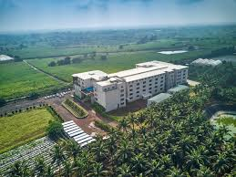

D.Y.P-ATU KOLHAPUR
The campus is striving hard to fulfil the dreams of the campus is striving hard to fulfil the dreams of Dr. Sanjay Patil who held immense faith in achieving education for all. Keeping with the mission of the college to nurture a community of lifelong learners, it aspires to play an important role in sharing the traditional mode of education along with the modern needs of the contemporary society.